Functions¶
astro_functions¶
-
astrolyze.functions.astro_functions.LTIR(p2, kappa='Kruegel', xmin=3.0, xmax=1100.0, beamConv=True, distance=847000.0, unit='JyB')[source] Integration of a multi-component greybody model.
Parameters: - p2 (list) – The parameters defining the multi-component greybody model. Same format
as p in
astrolyze.functions.astroFunctions.multi_component_grey_body() - kappa (string) – The dust extinction coefficient used to describe the greybodies. See: py:func:grey_body
- xmax (xmin,) – The integration range in units of micron. Defaults to 3 – 110 micron. The definition of LTIR from [DA]
- beamConv (True or False) – For units in Lsun the code is not well written. Hardcoded conversion between an 28” and 40” beam. !! CHANGE !!
- unit (string) – If
'Lsun'the returned integrated flux is in units of solar luminosities (erg s^-1). For this a distance is needed. If'JyB'the units are Jy/beam; distance is not used.
Notes
Needs some work to be generally usable. For units in Jy/beam the code seems to be safe.
References
[DA] Dale et al. 2001; ApJ; 549:215-227 - p2 (list) – The parameters defining the multi-component greybody model. Same format
as p in
-
astrolyze.functions.astro_functions.analytic_linear_fit(x, y, x_error, y_error)[source] This function resembles the analytical solution following chaper 8 from [TA].
Parameters: - x (float or list) – x measurements. Data.
- y (float or list) – y measurements. Data.
- y_error (float or list) – The y measurment errors.
- x_error (float or list) – The x measurment errors. If unset only errors in y are taken into account.
Notes
Without errors the following holds:
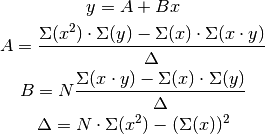
Warning
This has to be checked.
References
[TA] “An introduction to the study of uncertainties in physical measurement” by John R. Taylor.
-
astrolyze.functions.astro_functions.anti_line(p, y)[source] Inverse of a line returning the x value corresponding to a y value, i.e. x = y/m - b.
Parameters: p (list) – Contains the slope and the y-axis intersection of the line [m, b]. Returns: y Return type: value of x corresponding to y.
-
astrolyze.functions.astro_functions.black_body(x, T, nu_or_lambda='nu')[source] Calculation of the flux density of a black body at a temperature T and a wavelenght/frequency x.
Parameters: - x (float or numpy array) – wavelength [GHz] or frequency [micron]; specify type in nu_or_lambda
- T (float [Kelvin]) – Temperature of the black_body
- nu_or_lambda (string) – Specify whether x is a frequency

'nu'or a wavelenght
'lambda'; default is'nu'.
Returns: Flux density in Jansky
Return type: float [Jy]
Notes
This functions resembles the following formulas for input in frequency:
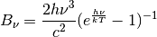
and for input in wavelenght:
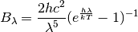
Both formulas are scaled by 1e26, thus returning the flux in Jansky.
Examples
The function works with linear numpy arrays. Thus the black_body can be evaluated at many points at the same time. Using matplotlib it can also be plotted:
import numpy as np import matplotlib.pyplot as plt import astrolyze.functions.astro_functions as astFunc frequency_range = np.arange(1e4, 1e7, 1e4) temperature_1 = 6000 temperature_2 = 12000 # Kelvin blackbody_1 = astFunc.black_body(frequency_range, temperature_1) blackbody_2 = astFunc.black_body(frequency_range, temperature_2) figure = plt.figure() axis = figure.add_subplot(111) pl = axis.loglog(frequency_range, blackbody_1, label='T = 6000 K') pl = axis.loglog(frequency_range, blackbody_2, label='T = 12000 K') pl = axis.legend() plt.savefig('black_body.eps')
(Source code, png, hires.png, pdf)
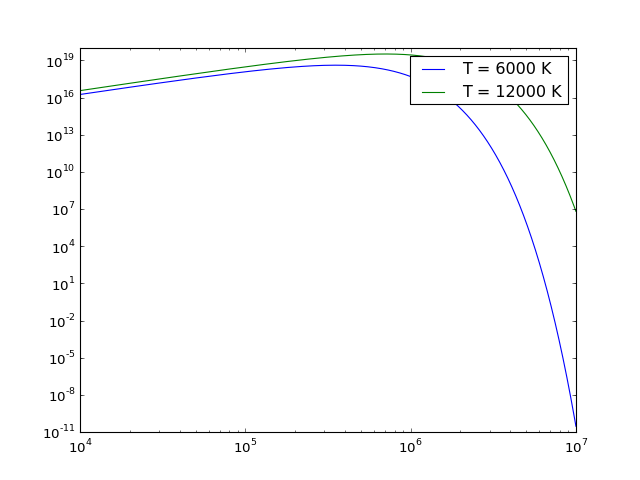
{kind=link}
{kind=link}
-
astrolyze.functions.astro_functions.calc_offset(central_coordinate, offset_coordinate, angle=0, output_unit='farcsec')[source] Calculates the offset between two coordinates.
Parameters: - central_coordinate (list) – The reference coordinate in degrees or equatorial.
- offset_coordinate (list) – The second coordinate, the offset will be with rescpect to central_coordinate.
- angle (float) – The angle in degrees, allowing rotated systems.
Returns: rotated_offset – The offsets, rotated only if angle given.
Return type: list
Notes
This functions includes a correction of the RA offset with declination:
-
astrolyze.functions.astro_functions.degrees_to_equatorial(degrees)[source] Converts RA, DEC coordinates in degrees to equatorial notation.
Parameters: degrees (list) – The coordinates in degrees in the format of: [23.4825, 30.717222] Returns: equatorial – The coordinates in equatorial notation, e.g. corresponding [‘1:33:55.80’, ‘+30:43:2.00’]. Return type: list
-
astrolyze.functions.astro_functions.equatorial_to_degrees(equatorial)[source] Converts RA, DEC coordinates in equatorial notation to degrees.
Parameters: equatorial (list) – The coordinates in degress in equatorial notation, e.g. [‘1:33:55.80’, ‘+30:43:2.00’] Returns: degrees – The coordinates in degreees, e.g. [23.4825, 30.717222]. Return type: list Raises: SystemExit– Ifequatorialis not a list of strings in the above format.
-
astrolyze.functions.astro_functions.freq_to_vel_resolution(center_frequency, frequency_resolution)[source] Function to convert a frequency resolution to a velocity resolution for a given center frequency.
Parameters: - center_frequency (float) – Center frequency in GHz.
- frequency_resolution (float) – The frequency resolution in MHz.
Returns: Return type: velocity_resolution in km/s.
Notes
Uses the formula TODO v_LSR = c((nu0-nuObs)/nu0)
Approved!
-
astrolyze.functions.astro_functions.frequency_to_wavelength(frequency)[source] Converting frequency to wavelength.
Parameters: frequency (float [GHZ]) – Returns: wavelength Return type: float [micron]
-
astrolyze.functions.astro_functions.gauss1D(x, fwhm, offset=0, amplitude=1)[source] Calulcates 1D Gaussian.
Parameters: - x (float or numpy.ndarray) – the x-axis value/values where the Gaussian is to be caluclated.
- fwhm (float) – The width of the Gaussian.
- offset – The offset in x direction from 0. Default is 0.
- amplitude – The height of the Gaussian. Default is 1.
Returns: gauss – The y value for the specified Gaussian distribution evaluated at x.
Return type: float or np.ndarray
Notes
The function used to describe the Gaussian is:
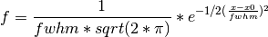
-
astrolyze.functions.astro_functions.gauss2D(x, y, major, minor, pa=0, xOffset=0, yOffset=0, amplitude=1)[source] Calculates a 2D Gaussian at position x y.
Parameters: - x (float or numpy.ndarray) – the x-axis value/values where the Gaussian is to be caluclated.
- y (float or numpy.ndarray) – the y-axis value/values where the Gaussian is to be calculated.
- minor (major,) – The fwhm of the Gaussian in x and y direction.
- pa (float) – The position angle of the Gaussian in degrees. Default is 0.
- yOffset (xOffset,) – The offset in x and y direction from 0. Default is 0.
- amplitude – The height of the Gaussian. Default is 1.
Returns: gauss – The y value for the specified Gaussian distribution evaluated at x.
Return type: float or np.ndarray
Notes
The function used to describe the Gaussian is :
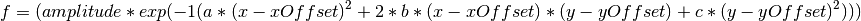
where:
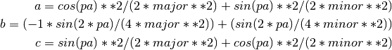
-
astrolyze.functions.astro_functions.generate_monte_carlo_data_line(data, errors)[source] This function makes a Monte Carlo Simulation of a data Set of measurements it uses the random.gauss() function to generate a data point from a gauss distribution, that has a mean equal to the measurement and its standard deviation corresonding to the error of the measurement.
Parameters: - data (list) – A list of original measurements.
- errors (list) – A list of the corresponding errors.
Returns: newData – The monte carlo simulated measurement.
Return type: array in same format as data.
See also
random.gauss()
-
astrolyze.functions.astro_functions.generate_monte_carlo_data_sed(data)[source] MonteCarlo Simulation of a set of flux measurements, assuming that the measurement data follows a gauss distribution.
This function makes use of the
random.gauss()function to generate a data point from a gauss distribution, that has a mean equal to the Flux measurement and a standard deviation correponding to the error of the measurement.Parameters: data (array) – - Same format as in grey_body_fit function:
- data= [[x1, x2, x3, ...][y1, y2, y3, ...][z1, z2, z3, ...]]
with x = wavelenght/frequency, y = flux, z = error on flux.
Returns: newData – The Monte-Carlo simulated measurement. Return type: array in same format as data. See also
random.gauss()
-
astrolyze.functions.astro_functions.grey_body(p, x, nu_or_lambda='nu', kappa='Kruegel', distance=840000.0)[source] Calculation of the flux density in Jansky of a grey_body under assumption of optically thin emission. Please see Notes below for an detailed description assumptions and equations used.
Parameters: - p (list) – List of the parameters defining a grey_body, being Temperature [K], column density or mass (dependent on the kappa used) and the grey_body slope index beta, respectively (refer to notes for more information): p = [T, N, beta]
- x (float or numpy array) – Wavelength [GHz] or frequency [micron]; specify type in nu_or_lambda
- kappa (string) –
- Chooses the dust extinction coefficient to use:
"easy"-> kappa = nu^beta; tau = N * kappa"Kruegel"-> kappa = 0.04*(nu/250Ghz)^beta; tau = M/D^2 * kappa
Please refer to Notes below, for further explanation.
- distance (float) – The distance to the source that is to be modeled if kappa
"Kruegel"is used.
Other Parameters: nu_or_lambda (string) – Specify whether x is a frequency
'nu'or a wavelength 'lambda'; default is'nu'. if lambda the input converted to a frequency in [GHz].Notes
The general equation for a grey_body is:
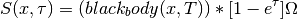
describing the flux coming from an solid angle
 while
while  is:
is: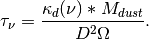
Here we assume optically thin emission and a source filling factor of unity. This simplifies the equation of the grey_body to:
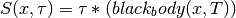
This script supports two versions of the dust extinction coefficient.:: A simple version without a lot of physics put into, kappa =
'easy'which defaults to the following grey_body equation: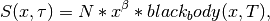
with N being a column density scaling factor.
The second version, kappa =
'Kruegel'uses the dust extinction coefficient reported in [KS] which renders the used equation to: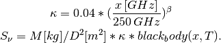
Examples
The same examples as for
black_body()apply.References
[KS] Kruegel, E. & Siebenmorgen, R. 1994, A&A, 288, 929
-
astrolyze.functions.astro_functions.grey_body_fit(data, start_parameter, nu_or_lambda='nu', fit_beta=False, fix_temperature=False, rawChiSq=None, kappa='Kruegel', residuals=False, iterations=1000000000.0)[source] This function fits a multi component grey body model to an observed SED for the optical thin case.
Parameters: - data (array) – The obseved data. Array of shape(3, x) first row has to be the X values (Frequency in [GHz]) of the measurements, second row the Y values (Flux [Jy]), and the third row the Z values the errors on the fluxes i.e.: data = array([[X1, X2, X3, ...], [Y1, Y2, Y3,...], [Z1, Z2, Z3, ...]])
- start_parameter (array) – Array of a first guess of the parameters of the grey_body components. The number of components is arbitrary. start_parameter = [[T1, T2, T3,...], [N1, N2, N3, ...], beta]
- fit_beta (True or False) – If True Beta is allowed to vary. Default is False.
- fix_temperature (True or False) – If True the Temperature is fixed allowed to vary.
- rawChiSq – if None the function gives the reduced chisq Value. If True the function gives chisq without dividing it by the dof
Returns: - p2 (list) – The final grey_body parameters that reduce the least squares for the given dataset.
- chisq/rawChiSq – chisq is reduced chisq with degrees of freedom: dof= #dataPoints-#freeFitParameters-1
Other Parameters: nu_or_lambda (string) – Specify whether x is a frequency
'nu'or a wavelenght 'lambda'; default is'nu'.:: Don’t use'lambda'as this part of thegrey_body()is not up-to-date.See also
scipy.optimize.leastsq()- This function is used to perform the least squares
fit.(),multi_component_grey_body(),grey_body(),black_body(),be()Notes
A one component fit has four free parameters if beta is allowed to vary or three if beta is fixed (one more than parameters to fit). Each additional component adds two more free paramters to fit. Assure that: number of data points > number of free parameters.
-
astrolyze.functions.astro_functions.grey_body_monte_carlo(p, data, iterations)[source] Function to evaluate the errors in the parameters fitted with the grey_body_fit function.
It uses Monte Carlo Simulated data (from
generate_monte_carlo_data_sed()) and performs a fit to this new data giving back the results of the fit parameters.Parameters: - p (list) – The parameters defining the multi component grey_body model to be
fitted. Same format as p in
multi_component_grey_body() - data (array) – The actual measured data of the SED, same format as for
grey_body_fitFunction() - iterations (int) – Number of times new data is generated and fitted.
Returns: - string – Containing the mean, standard deviation of the fit parameters, ready to print out.
- betaTlist (List of all fit results. Name misleading since it may not) – include the beta.
- p (list) – The parameters defining the multi component grey_body model to be
fitted. Same format as p in
-
astrolyze.functions.astro_functions.line(p, x)[source] Line y = m*x + b equation. Returns y value at point x.
Parameters: p (list) – Contains the slope and the y-axis intersection of the line [m, b]. Returns: y Return type: value of y corresponding to x.
-
astrolyze.functions.astro_functions.line_fit(p, x, y, y_error, x_error=False, iterations=10000)[source] Linear Fit to data, taking either errors in y or both in x and y into account.
Parameters: - p (list) – Containg slope (m) and y-axis intersection (b) p=[m, b]. Same as in
line()andantiline(). - x (float or list) – x measurements. Data.
- y (float or list) – y measurements. Data.
- y_error (float or list) – The y measurment errors.
- x_error (float or list) – The x measurment errors. If unset only errors in y are taken into account.
- p (list) – Containg slope (m) and y-axis intersection (b) p=[m, b]. Same as in
-
astrolyze.functions.astro_functions.line_monte_carlo(p, x, y, x_error, y_error, iterations, fitIterations=1000000000.0)[source] Gererate an estimate of the errors of the fitted parameters determined by the
line_fit()function.Parameters: - p (list) – Containg slope (m) and y-axis intersection (b) p=[m, b]. Same as in
line()andantiline(). - x (float or list) – x measurements. Data.
- y (float or list) – y measurements. Data.
- y_error (float or list) – The y measurment errors.
- x_error (float or list) – The x measurment errors. If unset only errors in y are taken into account.
Returns: - string (A string containing the results.)
- BList (A list containing the fittet y-Axis intersections.)
- MList (A list containing the fitted slopes.)
- chisqList (A list with the chisq values.)
- resultArray (Array with the mean and the standard deviations of) – slopes and y-axis intersections, i.e. [mean(M), std(M), mean(B), std(B)]
See also
grey_body_fit(),generate_monte_carlo_data_line()- p (list) – Containg slope (m) and y-axis intersection (b) p=[m, b]. Same as in
-
astrolyze.functions.astro_functions.linear_error_function(p, x, y, y_error, x_error)[source] Error function, i.e. residual from the measured value, which has to be minimised in the least square fit taking X and Y Error into account.
Parameters: - p (list) – Same as in
line()andanti_line(). - x (float or list) – x measurements. Data.
- y (float or list) – y measurements. Data.
- x_error (float or list) – The x measurment errors.
- y_error (float or list) – The y measurment errors.
- p (list) – Same as in
-
astrolyze.functions.astro_functions.multi_component_grey_body(pMulti, x, nu_or_lambda='nu', kappa='Kruegel')[source] Combines multiple grey_body functions and returns the flux density in Jansky for the input frequency/wavelenght.
Parameters: - pMulti (nested lists) – Similar to p from
grey_body()but the three entries are lists, i.e.:: pMulti = [[T1, T2, T3, ...Tn], [N1, N2, N3,...Nn], [beta]] - x (float or numpy array) – frequency [micron] (or wavelenght Not maintained, specify type in nu_or_lambda)
Returns: - sum(snu) (float) – All dust components summed.
- snu – A list with the fluxes of the individual components.
See also
black_body(),grey_body()Notes
Only one common beta for all components can be used. May be expanded to mutliple betas if needed.
Examples
Same as for black_body, but all returned grey_bodies may be plotted.
- pMulti (nested lists) – Similar to p from
-
astrolyze.functions.astro_functions.redshifted_frequency(rest_frequency, v_lsr)[source] Calculates the sky frequency corresponding to a rest frequency for a source with a velocity v_lsr.
Parameters: - rest_frequency (float) – The frequency of the line at rest in Ghz (More often state the obvious :)).
- v_lsr (float) – The velocity of the source in km/s.
Returns: redshifted_frequency – The sky frequency in GHz.
Return type: float
Notes
The formula used is:
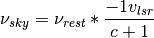
Approved!
-
astrolyze.functions.astro_functions.rotation_2d(coordinate, angle)[source] Implementation of the rotation matrix in two dimensions.
Parameters: - coordinates (list of floats) – Coordinates in the unrotated system [x, y].
- angle (float) – The rotation angle
Returns: [x_rotated, y_rotated] – Coordinates in the rotated system.
Return type: list of floats
-
astrolyze.functions.astro_functions.v_lsr(center_frequency, observation_frequency)[source] Calculates the velocity that corresponds to a certain frequency shift between two frequencies.
Parameters: - center_frequency (float) – center_frequency in GHz
- observation_frequency (float) – The observation frequency in GHz.
Returns: v_lsr – The velocity corresponding to the frequency shift in km/s
Return type: float
Notes
Approved!
-
astrolyze.functions.astro_functions.vel_to_freq_resolution(center_frequency, velocity_resolution)[source] Converts a velocity resolution to frequency resolution for a given center frequency.
Parameters: - center_frequency (float) – Center frequency in GHz.
- velocity_resolution – Velocity resolution in km/s.
Returns: frequency_resolution – The corresponding frequency resolution in Mhz
Return type: float
Notes
Approved!
units¶
Constant unit conversions available in this module are:
# Constant conversion factors.
#==============> Approved !!! <==========================
WattToErgs = 1e7 # 1W = 1e7 erg/s
ErgsToWatt = 1e-7 # 1W = 1e-7 erg/s
JanskyToWatt = 1e-26 # 1Jy = 1e-26 W/m2/Hz
WattToJansky = 1e26 # 1W = 1 Jy * m2 * Hz
ErgsToJansky_cm = 1e23 # 1 erg/s = 1e23 Jy * cm2 * Hz * s
JanskyToErgs_cm = 1e-23 # 1 Jy = 1e-23 erg/s/cm2/Hz
ErgsToJansky_m = 1e19 # 1 erg/s = 1e-19 Jy * m2 * Hz * s
-
astrolyze.functions.units.Int2Lum(distance_in_pc, cm_or_m='cm')[source] Conversion factor to calculate luminosity from intensities by integrating over the sky 4 pi Distance^2.
Parameters: - distance_in_pc (float) – Distance to the source in parsecs.
- cm_or_m (string) – Choose wether the out put is in cm^2 =
'cm'or in m^2 ='m'.
Notes
Approved.
-
astrolyze.functions.units.JyBToErgsB(input_flux, distance, wavelength, invert=False, map_use=False)[source] Conversion between Jy/beam and ergs/beam.
Parameters: - input_flux (float) – Flux to be converted in Jy/beam
- distance (float) – Distance to the source in parsec.
- wavelength (float) – Wavelength in 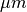.
- map_use –
Returns: - The conversion factor (map_use = true) or the already converted flux
- (map_use = False).
- r
-
astrolyze.functions.units.JyBToWKpc2(input_flux, distance, major, minor, wavelength, invert=False, map_use=False)[source] Conversion from JyB to W kpc^-2.
Parameters: - input_flux (float) – Flux to be converted.
- distance (float) – Distance to source in parsec.
- major (float) – Major Axis Beam (arcsec).
- minor (float) – Minor Axis Beam(arcsec).
- wavelength (float) – Wavelenght in .
- invert (True or False) – Changes the direction of conversion.
Returns: float
Return type: the converted Flux.
-
astrolyze.functions.units.JyBToWM2Kpc2(input_flux, distance, major, minor, wavelength, invert=False, map_use=False)[source] Conversion between Jy/beam and W m^-2 kpc^-2
Parameters: - input_flux (float) – Flux to be converted.
- distance (float) – Distance to source in parsec.
- major (float) – Major Axis Beam (arcsec).
- minor (float) – Minor Axis Beam(arcsec).
- wavelength (float) – Wavelenght in
- invert (True or False) – Changes the direction of conversion.
Returns: float
Return type: the converted Flux.
-
astrolyze.functions.units.WmToKkms(x, resolution=0, sterad=False, ToKKms=False, m2_or_cm2='m', nu_or_lambda='nu')[source] Conversion between W/m2 and K km/s.
Parameters: - x (float) – wavelenght/frequency [GHZ].
- resolution (float) –
- ToKKms (True or False) – Direction of the conversion.
- sterad (True or False) – If False convert from per beam to per sterad.
- m2_or_cm2 (string) – Choose if conversion to/from W m-2 oder W cm-2.
'm2'or'cm2'.
Returns: factor – The conversion factor.
Return type: float
-
astrolyze.functions.units.ergToKkms(x, toErg=False, nu_or_lambda='nu')[source] Conversion between ergs/cm2/s/sr and K km/s.
Parameters: - x (float) – wavelenght/frequency [GHZ],
- toErg (True or False) – True converts the other direction, i.e. from K km/s to ergs/cm2/s/sr.
- nu_or_lambda (string) – Choose type of x: frequency =
'nu'or wavelenght ='lambda'.
Returns: factor – The conversion factor.
Return type: float
Notes
Approved.
-
astrolyze.functions.units.jansky_to_kelvin(x, major, minor, nu_or_lambda='nu')[source] Conversion from Jy/beam to K.km/s (Tmb).
Parameters: - x (float) – wavelength/frequency [GHZ],
- major (float) – Major Axis Beam (arcsec).
- minor (float) – Minor Axis Beam(arcsec).
- nu_or_lambda (string) – Choose type of x: frequency =
'nu'or wavelength ='lambda'.
Notes
Same as
kelvin_to_jansky()
-
astrolyze.functions.units.kelvin_to_jansky(x, major, minor, nu_or_lambda='nu')[source] Conversion from K.km/s (Tmb) and Jy/beam.
Parameters: - x (float) – wavelength/frequency [GHZ],
- major (float) – Major Axis Beam (arcsec),
- minor (float) – Minor Axis Beam(arcsec),
- nu_or_lambda (string) – Choose type of x: frequency =
'nu'or wavelength ='lambda'.
Notes
This function has been compared with the Time estimator from the [GILDAS] package ASTRO and yields the same conversion factors.
References
[GILDAS] www.iram.fr/IRAMFR/GILDAS
constants¶
# Natural Constants
c = 299792458. # Speed of light [m]
c_in_cm = c * 1e2 # Speed of light [cm]
h = 6.62606896e-34 # Plancks constant [Js]
k = 1.3806503e-23 # Boltzman constant [m^2 kg s^-1 K^-1]
tBG = 2.7 # Cosmic Microwave Background Temperature in [K]
e = 2.7182818284 # Eulers number
# Natural Constants in cgs units.
k_CGS = 1.3806503e-16 # Boltzman constant [cm^2 g s^-1 K^-1]
h_CGS = 6.62606896e-27 # Plancks constant [Js]
c_CGS = 2.99792458e10 # Speed of light [cm]
# Conversion of distances
parsec_in_m_1 = 3.08568025e16
parsec_in_m = 3.085e16 # parsec in m
parsec_in_cm = 3.08568025e18 # parsec in cm
km_in_cm = 1e5
# Masses
m_sun = 1.9891e30 # [kg]
m_proton = 1.672621637e-27 # [kg]
# Gauss constants
# GaussArea/(height*FWHM)
gauss_constant = 1.064467
# Luminosities
LsunW = 3.846e26 # Watts
Lsunergs = 3.846e26*1e7 # erg/s
debye_to_EsuCm = 1.e-18 # Change from debye to esu/cm
# Angle Conversions
a2r = 4.848e-6 # arcsec to radian
a2d = 1./60/60 # arcsec to degree
r2d = 180./math.pi # radian to degree